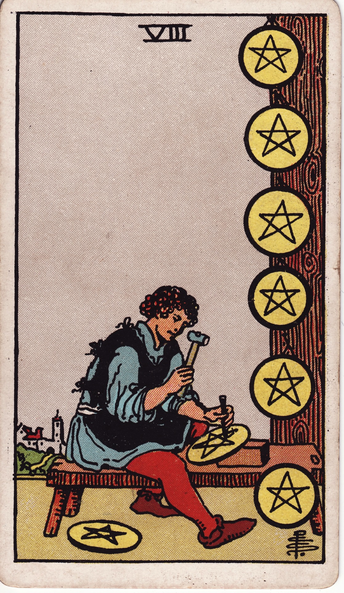
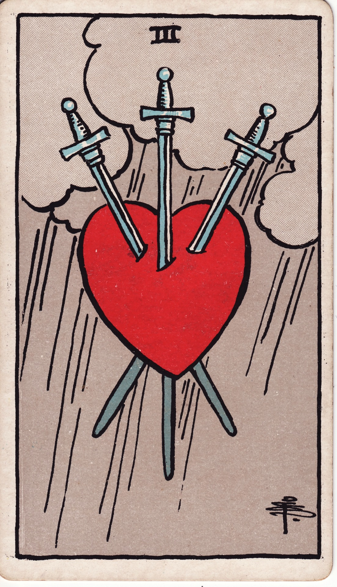
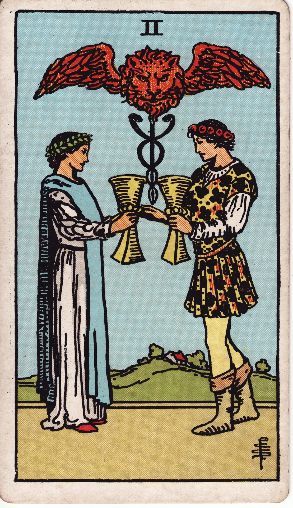

魔法師的學徒 / LESSON 01
塔羅入門
從牌組結構到圖像觀察
給第一次接觸塔羅的你
約 10–15 分鐘 · 一次觀察練習

查證與講者筆記
先說明這堂課的範圍是結構、圖像與書寫，不進行預測。
Wiki：一張牌的書寫練習
主張：C09；來源：本課自編／直接圖像觀察
圖像來源：Wikimedia Commons；Pamela Colman Smith。

這堂課會學什麼
- 說出大牌與小牌如何組成 78 張牌。
- 分清圖像裡的細節，與自己的解讀。
- 寫出一個值得繼續探索的問題。
查證與講者筆記
用可完成的學習目標取代大量牌義背誦。
Wiki：78 張牌的結構 · 觀察、解釋與提問 · 一張牌的書寫練習
主張：C02、C11；來源：S01 · The Metropolitan Museum of Art · S02 · Victoria and Albert Museum · S03 · Folger Shakespeare Library
先有紙牌遊戲，後有占卜用途
- 15 世紀北義大利的紙牌遊戲
- 18 世紀後期占卜用途出現
- 19 世紀占卜與神祕學關聯進一步普及
「開始使用」與「廣泛流行」是不同階段。
查證與講者筆記
出現與普及不同。不要把塔羅與一般紙牌的起源混為一談。
Wiki：塔羅的歷史與用途
主張：C01、C05；來源：S01 · The Metropolitan Museum of Art · S03 · Folger Shakespeare Library · S02 · Victoria and Albert Museum
一副牌，先看兩個部分
本課以常見 78 張牌的結構為範圍。
查證與講者筆記
這裡教的是常見 78 張結構；歷史牌組存在例外。
Wiki：78 張牌的結構
主張：C02；來源：S01 · The Metropolitan Museum of Art · S02 · Victoria and Albert Museum · S03 · Folger Shakespeare Library
小牌如何組成 56 張？
- 四花色：權杖、聖杯、寶劍、錢幣
- 每花色：Ace–10，共 10 張
- 宮廷牌：侍者、騎士、皇后、國王
- 4 ×（10 + 4）= 56
查證與講者筆記
先讓學習者自己算一次。小牌每花色不是普通撲克牌的 13 張。
Wiki：78 張牌的結構
主張：C03、C04；來源：S01 · The Metropolitan Museum of Art · S05 · The Strong National Museum of Play
THE IMAGE MAKER
認識你正在看的版本
Rider–Waite–Smith，簡稱 RWS
- 1909 年出版
- 圖像創作者：Pamela Colman Smith
- 不同牌組可能有不同的圖像與安排。

查證與講者筆記
右圖是本課沿用的寶劍三。不要把這套設計稱為所有塔羅唯一的樣子。
Wiki：RWS 與圖像版本
主張：C06、C07；來源：S02 · Victoria and Albert Museum · S03 · Folger Shakespeare Library
圖像來源：Wikimedia Commons；Pamela Colman Smith。

看圖時，分開三件事
- See｜看見了哪些細節？
- Think｜哪些細節支持你的解釋？
- Wonder｜你還想了解什麼？
查證與講者筆記
方法來源：Harvard Project Zero。這是簡短方法介紹，本課例句自行設計。
Wiki：觀察、解釋與提問
主張：C08、C11；來源：S04 · Harvard Project Zero
先看這張圖，不急著下結論
給自己十秒，描述你真的看見的部分。
兩個人物相對站立，各自拿著杯子。
『他們一定很相愛』是解釋，不是直接看見的事實。

查證與講者筆記
先給讀者十秒觀察，再按按鈕揭示示範。圖像不能替人物關係提供保證。
Wiki：觀察、解釋與提問
主張：C10；來源：本課自編／直接圖像觀察
圖像來源：Wikimedia Commons；Pamela Colman Smith。

把問題留在自己能探索的範圍
原問題：我一定會成功嗎？
換個問法：我目前有什麼資源？還需要確認什麼？
本課自編練習；不是對結果的保證。
做一次 60 秒觀察筆記
- 寫三個看得見的細節。
- 寫一種可能解釋，附上畫面證據。
- 留下一個尚未確定的問題。
哪一句是直接觀察？
小牌每個花色有幾張？
查證與講者筆記
答案是 14 張：10 張數字牌加 4 張宮廷牌。
Wiki：78 張牌的結構
主張：C03、C04；來源：S01 · The Metropolitan Museum of Art · S05 · The Strong National Museum of Play
帶走一個習慣
- 先描述畫面，再說自己的理解。
- 記住 22 + 56 的結構，不急著背完所有牌義。
- 不確定的地方，留下問題、回查來源。
查證與講者筆記
邀請讀者到 Wiki 查看來源及相關概念。
Wiki：78 張牌的結構 · 觀察、解釋與提問 · 一張牌的書寫練習
主張：C02、C09、C11；來源：S01 · The Metropolitan Museum of Art · S02 · Victoria and Albert Museum · S03 · Folger Shakespeare Library
這份課程從哪裡來？
- S01 / The Metropolitan Museum of Art
- S02 / Victoria and Albert Museum
- S03 / Folger Shakespeare Library
- S04 / Harvard Project Zero
- S05 / The Strong National Museum of Play
- 5 篇資料 → 5 個 Wiki 知識頁 → 14 張教學投影片
- 每頁「查證與講者筆記」可回到 Wiki 與原始來源。
- 流程、檢查紀錄與反思另附於作業網站。